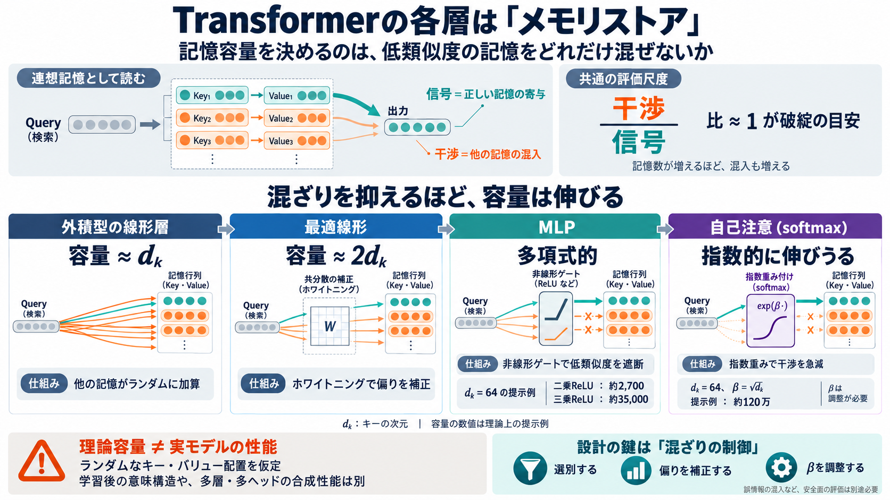

Understanding Factual Recall in Transformers via Associative Memories
First, the quantity HdhHd\_{h} must be larger than S+RS+R. This corresponds to self-attention having sufficient capacit…

Transformerを「記憶装置」で読む
ニューラルネットの各層を、キーとバリューの“記憶”を取り出す装置として捉え、性能差を 干渉/信号 で比べます。
英: interference-to-signal ratio（干渉/信号比）／日: 干渉＝別記憶の混入、信号＝正しい記憶の寄与。
何が容量を決める？
記憶を増やすほど、呼び出し時に他の記憶が混ざります。そこで「正しい寄与（信号）」に対して「混ざり（干渉）」がどれくらいかで、実質的な容量を測ります。
連想記憶としての層
入力（クエリ）でキーとの類似度を計算し、類似している記憶ほど強く混ざって出力されます。層の“形”の違いは、類似度がどれだけ混ざりを抑えるかの違いになります。
4つのメモリ型
対象は、線形層、MLP（ReLUやGLU/SwiGLU系）、そして自己注意（softmax）。同じ尺度で、容量がどれだけ増えるかを見積もります。
MLPは中間：非線形ゲートで低類似度の寄与を強く抑え、多項式的に増えるとされます。
外積メモリの限界
外積（outer product）型では、干渉がランダムに合算されるため、容量は概ねキー次元 d_k で決まりやすく、早期に限界へ近づきます。
ホワイトニングで2倍
外積の“読み出し”を単純にしない工夫として、最適な線形回帰（ホワイトニング込み）を入れると容量が約2倍に改善します。
MLPはゲートで選別
MLPの非線形（ReLUや二乗・高次）では、類似度が小さい記憶の寄与が強烈に減り、干渉の増え方が抑えられます。その結果、容量は多項式的に増えると説明されます。
GLU/SwiGLU系も「ゲートで混ざりを抑える」方向で同様の見立てになります。
どこまで伸びる？
外積（線形）→最適線形→MLP（多項式）→自己注意（指数寄り）という順で、干渉抑制が強くなり容量が大きく増える、という全体像です。
測る指標は一貫して 干渉/信号（比≈1が破綻目安）です。
softmaxは指数で消す
自己注意では類似度が指数関数で変換されるため、わずかに低い類似度でも急激に重みが落ち、干渉がさらに激減します。その結果、容量は指数的に伸び得ると主張されます。
英: β scaling／日: βスケーリング。βを無限に大きくするとsoftmaxがargmaxに近づき、安定性や学習上の問題が起きやすい点が注意点です。
ランダム仮定の壁
容量見積もりは「キー・バリュー記憶がランダムベクトルとして配置される」という仮定に依存します。学習済みモデルでは意味構造が形成されるため、理論値をそのまま実性能へ置き換えにくい、と本稿は明示しています。
設計指針として読む
層ごとの容量差を生む主因は、低類似度の記憶をどれだけ“混ざらせないか”。干渉を減らす（選別する）、共分散を扱う（ホワイトニング的発想）、βを制御する——が設計の直観になります。
※容量増は誤情報の混入リスクも変えうるため、安全面の評価は別途必要です。
First, the quantity HdhHd\_{h} must be larger than S+RS+R. This corresponds to self-attention having sufficient capacit…
Transformer capacity scaling. Under bounded attention noise, Transformer blocks with our MLP construction achieve optima…
parameter count. We next introduce a synthetic factual recall task, and prove that a transformer with a single layer of …
Note: This analysis follows the excellent framework presented in "Understanding Transformer from the Perspective of Asso…
circuits more explicit. The connection between transformers and a writable memory has also been made in machine learning…